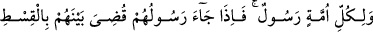
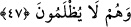

gösterirsek” demektir. “yok eğer” sana göstermeden “seni vefat ettirirsek, nihâyet
onların” mecbûrî olarak “dönüşü de bizedir.” İşte o zaman onların uğrayacakları
azâbı, sana âhirette gösteririz. Biz de kendilerinden intikam alacağız.
“Sonra Allah onların yapmakta olduklarına da şâhiddir.” Yani kötü amellerinin
karşılığını verecektir. Burada şâhidlik zikredilmiş, fakat şâhidliğin neticesi ve gereği
kasdedilmiştir. Bizzat şahidlik kasdedilmiş olsaydı, âyetteki sıralama doğru olmazdı.
Çünkü Allah Teâlâ kâfirlerin hem kendisine dönüşlerine hem de daha önce kendisini
yalanlamalarına ve kendisine karşı harb etmelerine de şâhiddir.
el-Kevâşî’de şöyle denilir: “Âyetteki tehir (Sonra Allah onların..), bir acz ifâdesi
olmayıp bilâkis Allah Teâlâ’nın gücünün onlara daima yeteceğini göstermektedir.”
47. Her ümmetin bir peygamberi vardır. Peygamberleri gelince aralarında
adâletle hükmolunur, onlara hiç haksızlık edilmez.
Geçmiş ümmetlerden “her” bir “ümmetin” kendi durumlarına uygun özel bir şeriatla
kendilerini hakka çağırmak için gönderilmiş “bir peygamberi vardır. Peygamberleri”
apaçık delillerle “gelince” ve ümmetleri kendilerini tekzip edince “aralarında” yani
bütün ümmetlerle peygamberleri arasında “adâletle” tam bir eşitlikle, peygamber ve
ona imân edenlerin kurtulacaklarına, tekzip edenlerin ise helâk olacaklarına
“hükmolunur, onlara” azâba uğramalarını gerektiren bu hükümden dolayı “hiç
haksızlık edilmez.” Çünkü bu azap kendi amellerinin neticelerindendir.
Fakir (Bursevî) der ki: Eğer “Fetret devirleri, zâhiren bu âyetle uyuşmazlık
gösteriyor. Çünkü âyet, zâhiri itibariyle hiçbir ümmetin ihmal edilmediğini söylüyor.
Oysa fetret devrindekilere herhangi bir elçi gönderilmemiştir. Nitekim “babaları
uyarılmayan bir kavmi uyarman için...” (Yâsîn, 36/6) âyeti de bunu gösteriyor.”
dersen, şöyle cevap veririm:
Âyetin akışı, helâkine hükmedilen bütün ümmetlerin önceden bir peygamberin diliyle
uyarıldığını, fetret ehline ise azap edilmediğini gösteriyor. Çünkü Araplara Hz.
İsmail’den sonra Peygamber Efendimiz dışında bir peygamber gönderilmemiştir.
Sonraki Arapların Bedir ve benzeri savaşlarda uğratıldığı azap ise sadece Allah Rasûlü
(s.a.)’i tekzip etmelerinden ileri gelmiştir. “Biz, bir peygamber göndermeden
(kimseye) azâb edecek değiliz.” (el-İsrâ, 17/15) âyeti de buna delâlet eder. Hz.
İsmâil’in peygamberliği de öteki peygamberlerinki gibi ölümüyle sona ermiştir. Çünkü
ölümden sonra peygamberliğin hâlâ geçerli oluşu sadece bizim Peygamberimiz’e hâs
özelliklerdendir. İnsânu’l-uyûn’da böyle geçmektedir.